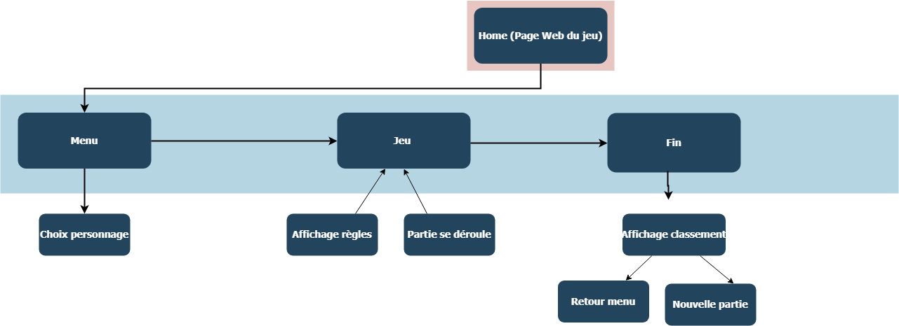
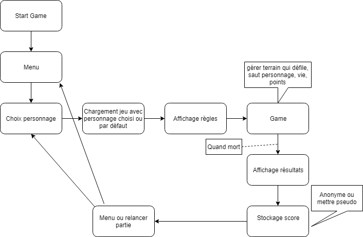

Flux et sitemap de notre projet
Par Victor le 09/03/2019 à 14:00
Voici le sitemap de notre site avec le jeu Vous pouvez trouver les différents choix qui sont offerts au joueur comme la sélection du personnage ou encore la possibilité de relancer une partie lors d'une défaite. La page où se trouve notre jeu ne change jamais et aucune autre n'apparait. Nous avons donc qu'une page "home" avec le contenu qui change en fonction du déroulement du jeu (menu, règles, jeu et la fin). L'image ci-dessous représente donc comment le site fonctionne.

Nous avons une séquence de jeu basique. Elle est présentée ci-dessous sur l'image où vous pouvez voir ce qu'il se passe en fonction des actions faites ou décisions prises.

Le code source de l'application est disponible sur le github du projet.